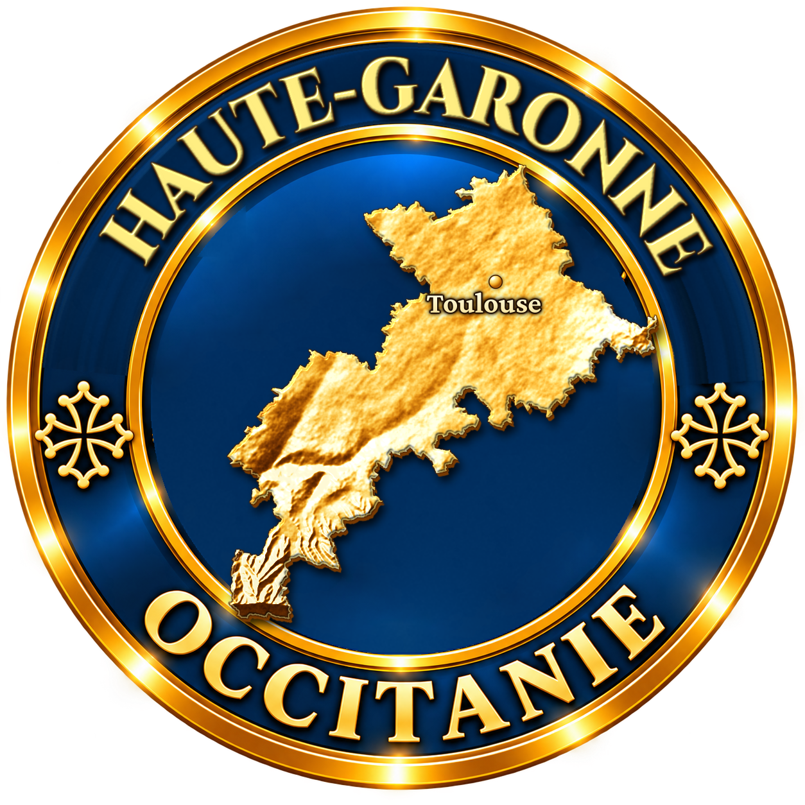
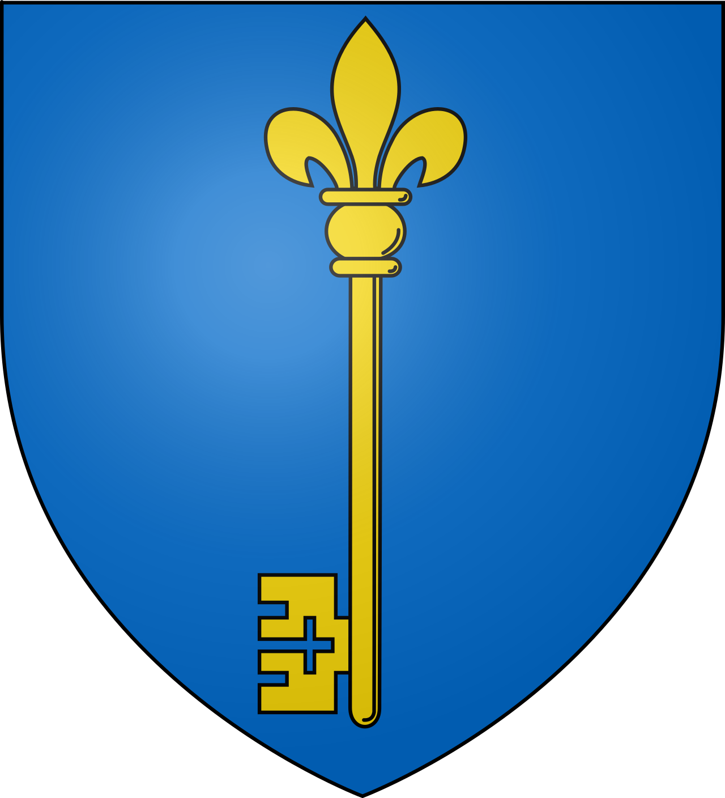
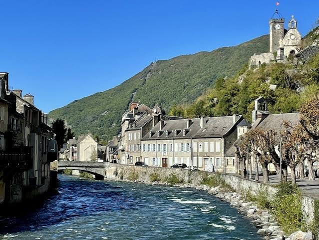

Avant Saint-Béat : un défilé sur la Garonne. Au sud du Comminges, la Garonne se fraie un passage étroit entre le pic du Gar et le massif de Cagire. Les Romains nomment ce resserrement Passus Lupi, « le passage du loup ». Le lieu commande la route du Val d'Aran et de l'Espagne.
Le marbre des Romains. Dès l'époque gallo-romaine, le marbre blanc de Saint-Béat est extrait au flanc de la montagne. Les carriers y dédient des autels au dieu pyrénéen Erriape. Ce marbre sert aux monuments de Lugdunum Convenarum (Saint-Bertrand-de-Comminges) et à plusieurs sculptures de la célèbre villa de Chiragan, à Martres-Tolosane, aujourd'hui au musée Saint-Raymond de Toulouse.

Saint Béat et saint Privat. Le village tient son nom d'un saint ermite évangélisateur. L'église romane Saint-Privat-Saint-Béat, édifiée au XIIe siècle et classée monument historique, conserve les reliques des deux saints et un riche trésor d'orfèvrerie et de statuaire.
La « clé de la France ». Au XIIe siècle, un château fort est élevé sur l'éperon qui verrouille la vallée. Il contrôle le passage des hommes et des marchandises entre Comminges et Val d'Aran. Cette fonction stratégique vaut à Saint-Béat le surnom de « clé de la France », rappelé par la clé figurant sur ses armoiries.
<Une vallée de commerce frontalier. Comme les autres communautés pyrénéennes, Saint-Béat vit des accords de « lies et passeries » qui garantissent, même en temps de guerre, le pacage et le commerce avec le Val d'Aran voisin. Foires, péages et transit des bestiaux font sa prospérité.
Le XIXe siècle : l'industrie marbrière. Les carrières connaissent un nouvel essor avec la demande en marbre statuaire et décoratif. Tailleurs de pierre et sculpteurs s'installent au bord de la Garonne ; le marbre de Saint-Béat orne églises, monuments aux morts et édifices publics de tout le Sud-Ouest.
Juin 2013 : la crue de la Garonne. Une crue exceptionnelle de la Garonne dévaste le village les 18 et 19 juin 2013 : maisons détruites, ponts emportés, quais effondrés. La reconstruction mobilise des années durant habitants et collectivités.
2019 : naissance de Saint-Béat-Lez. Le 1er janvier 2019, Saint-Béat et sa voisine Lez, sur l'autre rive, fusionnent pour former la commune nouvelle de Saint-Béat-Lez.
Saint-Béat garde la porte de la Garonne : la montagne lui a donné son marbre, la frontière son château, et ses sculpteurs continuent d'écrire son histoire dans la pierre.
Repère synthétique — L'Âme des RégionsPour aller plus loin — sources et documentation :
• Pyrénées 31 — la brèche romaine de Saint-Béat
• Tourisme Occitanie — chapelle Saint-Roch
• Musée Saint-Raymond — sculptures de la villa de Chiragan
• Archives départementales de la Haute-Garonne
• Plateforme POP (ministère de la Culture) — monuments historiques
• Wikipédia — Saint-Béat-Lez
Le maréchal Joseph Gallieni (1849-1916), artisan de la défense de Paris en 1914 et des « taxis de la Marne », est né à Saint-Béat. Le peintre Romain Cazes (1810-1881), élève d'Ingres et auteur des décors de l'église de Luchon, y a également vu le jour. Selon la tradition locale, Edmond Rostand se serait inspiré d'un balcon du village pour la scène du balcon de Cyrano de Bergerac.
Chaque été, le Festival de la sculpture et du marbre réunit sculpteurs du monde entier autour d'un symposium : les œuvres réalisées en public sur le marbre local enrichissent peu à peu un parcours de sculptures à travers le village.
Accès : Saint-Béat-Lez se trouve sur la route de l'Espagne (N125), entre Montréjeau et le Val d'Aran. La halte ferroviaire de Marignac–Saint-Béat, sur la ligne Montréjeau–Luchon rouverte en 2025, est toute proche.
Office de tourisme : Les bureaux de l'office de tourisme Pyrénées 31 renseignent sur les visites du village, des carrières et le programme du festival du marbre.
Conseil de visite : associez patrimoine bâti et patrimoine de la pierre : église, château, puis sentiers des carrières, avant de poursuivre vers Fos et la frontière.